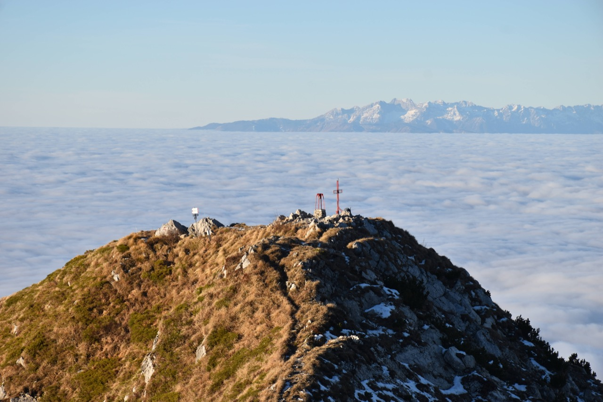
Una giornata straordinaria
Ero partito con altri intenti, ma forse meglio così...
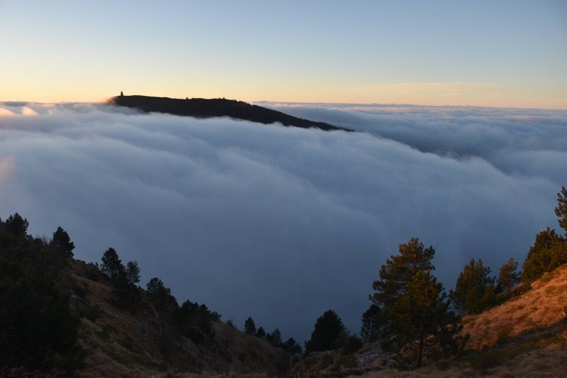
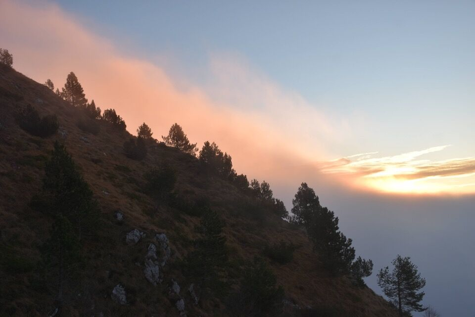
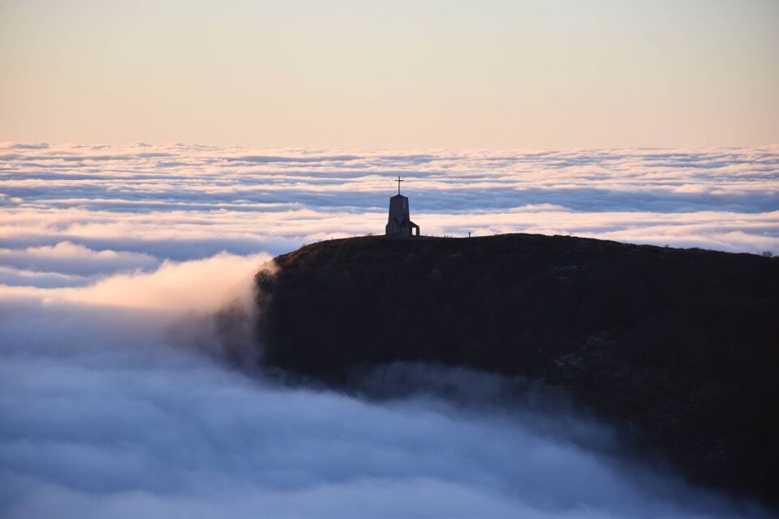
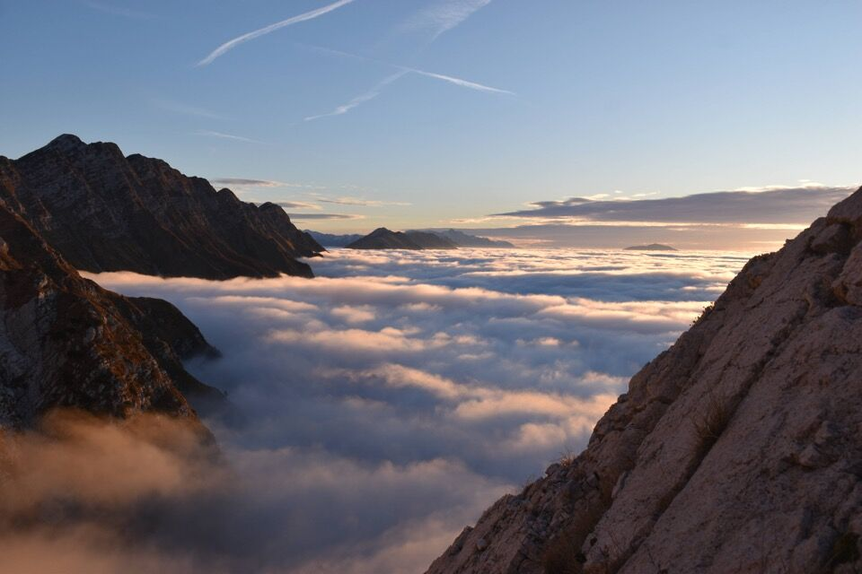
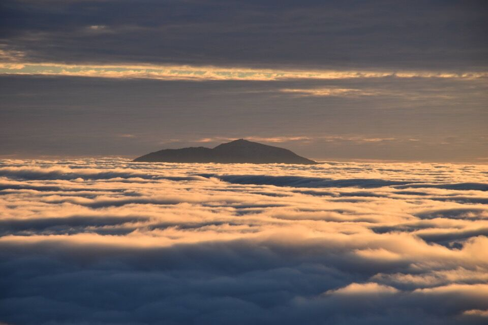
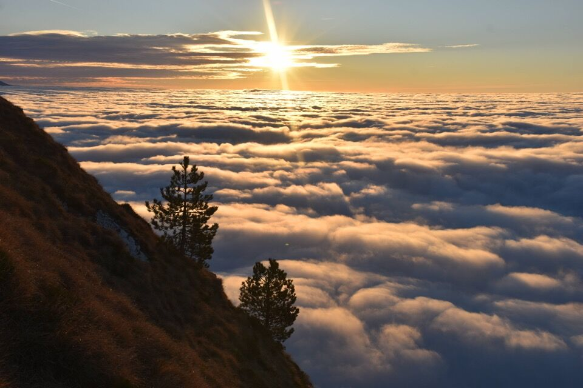
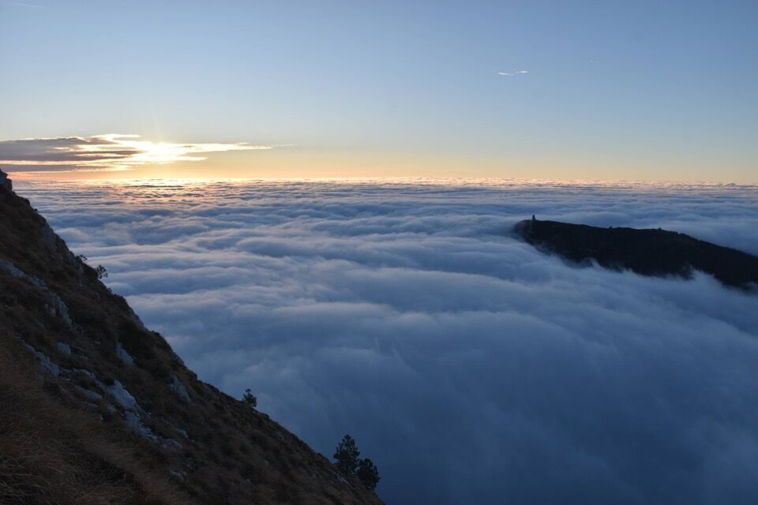
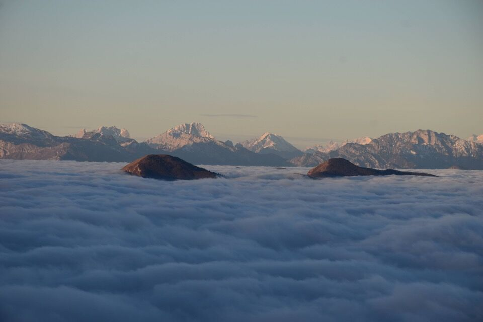
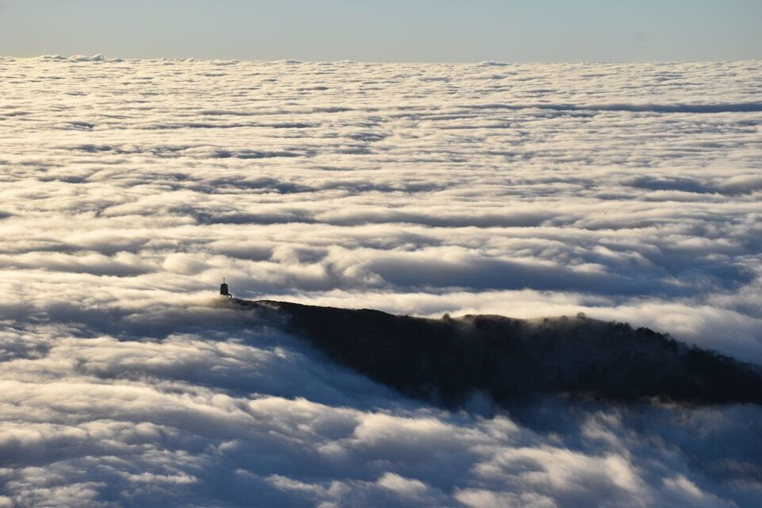
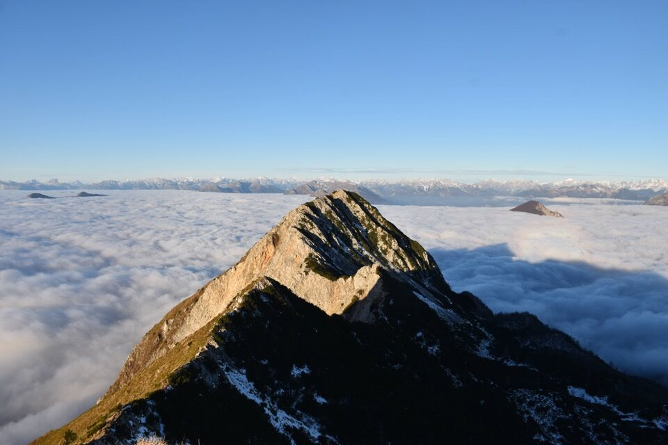
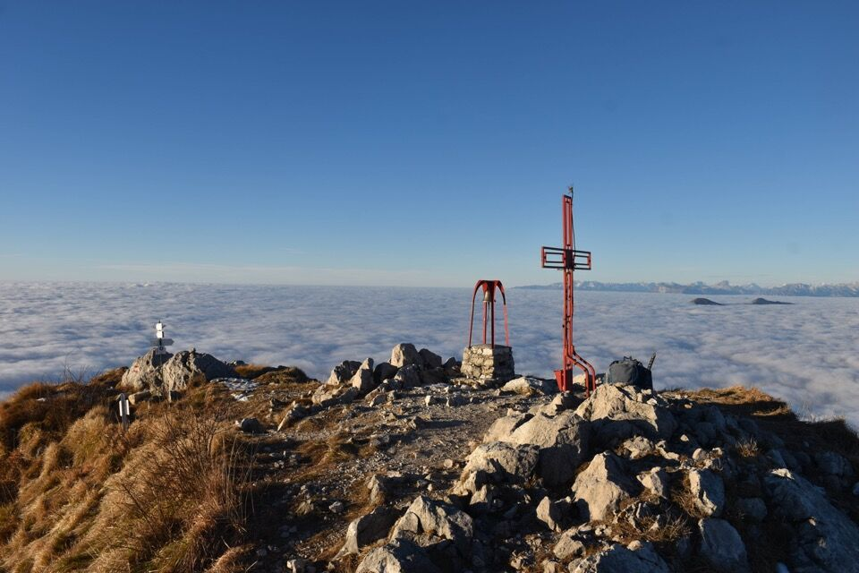
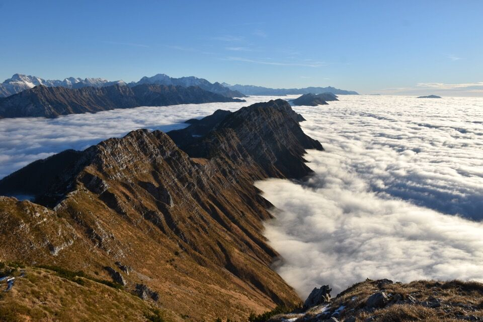
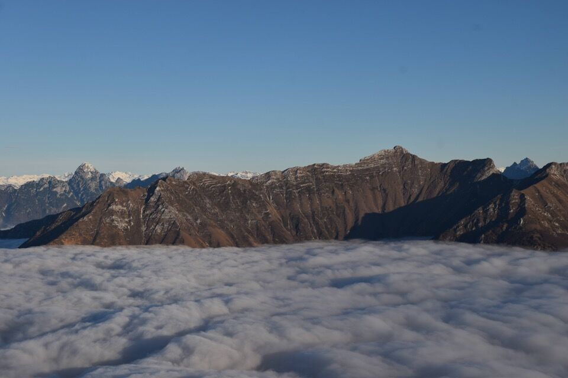
***
«Vi ho annoiato assai ma non ho alcuna pretesa. Ho scritto come vi avrei parlato: qualcuno mi avrà capito, specialmente chi della vita non ha che dolore e delusione. I monti lo innalzano verso l'universo, incontro alle stelle, offrendogli un dolce balsamo che gli placa per un istante l'animo ed il cuore e gli fa bere di quel nettare ristoratore che ancora sa dare la natura colla sua sincerità, colla sua semplicità, colla sua bellezza, col suo profumo e colla visione dell'infinito.» (*)
(*) Tratto da: Umberto Tinivella, Alpi e Alpinismo (1942)